Οδηγός χρήσης HEXIS
Όλα όσα χρειάζεσαι για την πλατφόρμα και τα εργαλεία της — από την πρώτη σύνδεση μέχρι τις αναφορές PDF και τις μετρήσεις στο πεδίο.
Ξεκινώντας
Το HEXIS είναι πλατφόρμα εργαλείων για μηχανικούς, εργολάβους και συνεργεία: διαχείριση εργοταξίου σε πραγματικό χρόνο και μια εργαλειοθήκη που χτίζεις στα μέτρα σου. Δουλεύει σε κινητό, tablet και υπολογιστή — ακόμα και χωρίς σήμα στο εργοτάξιο.
Δημιουργία λογαριασμού
Πήγαινε στο hexis-app.gr και πάτησε «Δωρεάν δοκιμή». Με την εγγραφή ξεκινά 14ήμερη δοκιμή — χωρίς κάρτα — με πλήρη πρόσβαση σε όλα τα εργαλεία της πλατφόρμας.
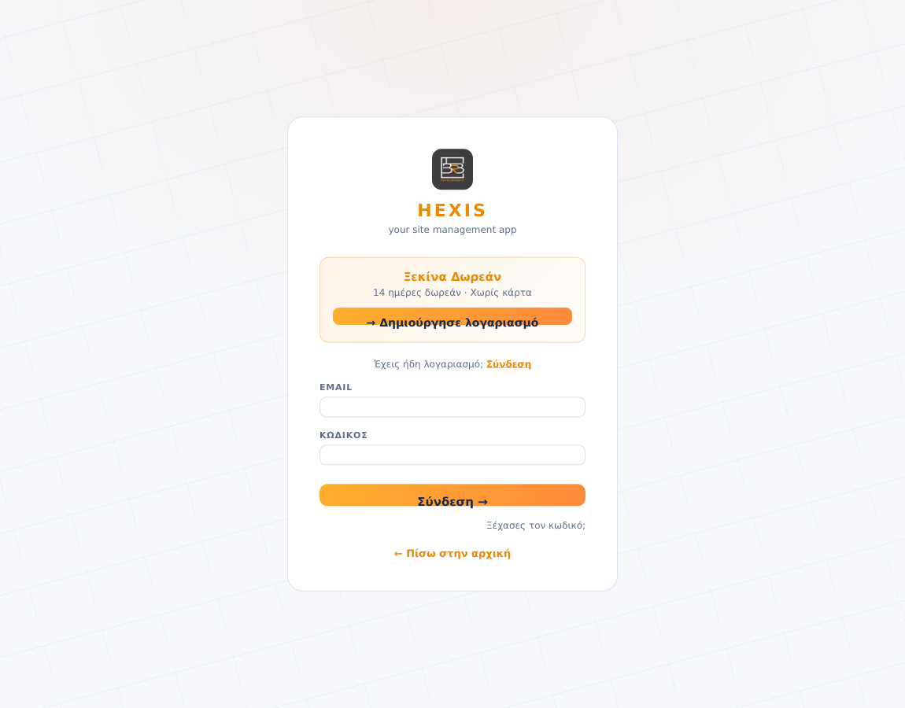
Εγκατάσταση σαν εφαρμογή
Το HEXIS δεν κατεβαίνει από κατάστημα εφαρμογών — εγκαθίσταται απευθείας από το site σε 10 δευτερόλεπτα:
iPhone: άνοιξε το Safari (όχι Chrome) στο hexis-app.gr → πάτησε το κουμπί Κοινοποίησης (τετράγωνο με βέλος ↑) → «Προσθήκη στην οθόνη Αφετηρίας» → «Προσθήκη». Android: άνοιξε το Chrome στο hexis-app.gr → μενού ⋮ πάνω δεξιά → «Εγκατάσταση εφαρμογής» / «Προσθήκη στην αρχική οθόνη».
Το HEXIS Hub
Μετά τη σύνδεση βρίσκεσαι στο Hub — την αρχική οθόνη με όλες τις εφαρμογές. Το μεγάλο πλακίδιο «Διαχείριση Έργων» είναι η καρδιά της πλατφόρμας και περιλαμβάνεται στη συνδρομή σου (Starter/Pro/Studio). Από κάτω βρίσκονται τα εργαλεία (add-ons), που ενεργοποιούνται ξεχωριστά.
Πώς αγοράζω ένα εργαλείο
Πάτησε στο εργαλείο που σε ενδιαφέρει: ανοίγει η σελίδα παρουσίασής του με τις δυνατότητες και την ετήσια τιμή. Πάτησε «Ενεργοποίηση» — το αίτημά σου καταχωρείται και η ομάδα του HEXIS επικοινωνεί μαζί σου για την πληρωμή. Μόλις ενεργοποιηθεί, το εργαλείο ανοίγει σε όλες τις συσκευές σου για 1 έτος.
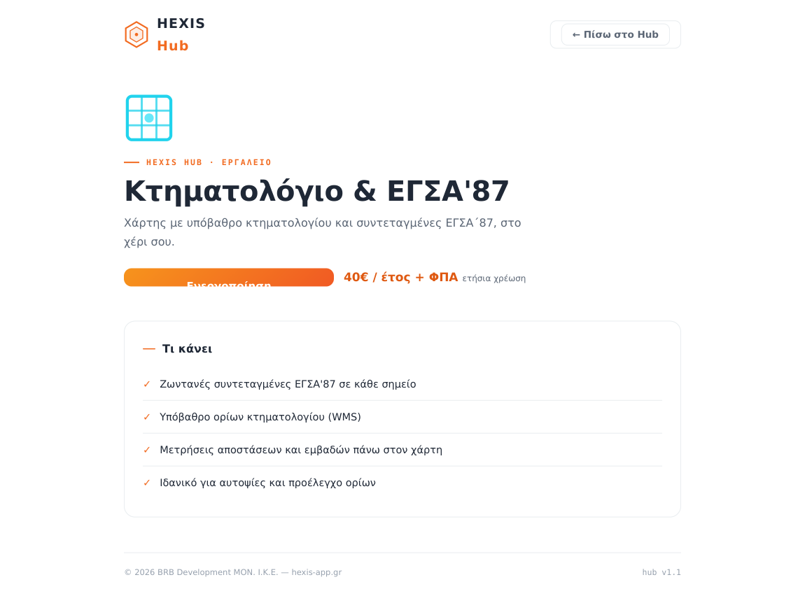
Διαχείριση Έργων
Ο πυρήνας του HEXIS: καταγράφεις εντολές, παραγγελίες και παρατηρήσεις με φωτογραφίες και πινέζες πάνω στις κατόψεις, συνεργάζεσαι με την ομάδα σου σε πραγματικό χρόνο, και εξάγεις επαγγελματικές αναφορές PDF για τον πελάτη.
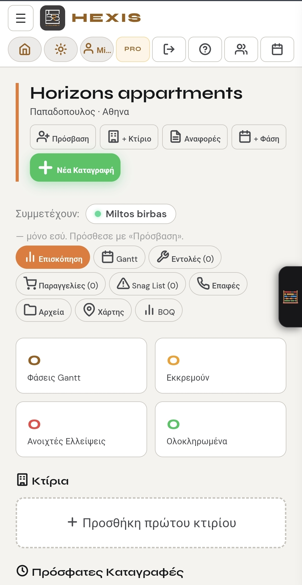
Καταγραφές — Εντολή, Παραγγελία, Παρατήρηση
Τρεις τύποι: 📋 Εντολή (εργασία που πρέπει να γίνει), 📦 Παραγγελία (υλικά), ⚠️ Παρατήρηση (σχόλιο του επιβλέποντα — πρόβλημα που εντόπισες). Η φόρμα έχει όλα τα πεδία σε μία οθόνη: έργο & κτίριο, κατηγορία, παρατηρήσεις (ή πάτησε 🎙️ Φωνητική καταγραφή και μίλησε — το κείμενο γράφεται μόνο του), υπεύθυνο και deadline — όσα λήγουν εμφανίζονται ως ΕΚΠΡΟΘΕΣΜΑ ή «για ΣΗΜΕΡΑ» στην αρχική. Με την αποθήκευση, η καταγραφή συγχρονίζεται αμέσως σε όλες τις συσκευές της ομάδας.
Φωτογραφίες & Βίντεο
Τράβα φωτογραφίες από την κάμερα ή διάλεξε από τη συλλογή — συμπιέζονται αυτόματα και ανεβαίνουν γρήγορα ακόμα και με αδύναμο σήμα. Βίντεο έως 50MB (τράβα σε 1080p). Στην προβολή: πάτημα για zoom 3× στο σημείο, pinch για ελεύθερο zoom. Με το ✏️ γράφεις σημειώσεις πάνω στη φωτογραφία (π.χ. μια διάσταση «13.57») ή σχεδιάζεις ελεύθερα — αποθηκεύονται μόνιμα και φαίνονται και στις αναφορές.
Κατόψεις & Πινέζες
Σύνδεσε κάθε καταγραφή με ακριβές σημείο στην κάτοψη: ανέβασε την κάτοψη στα Αρχεία (JPG/PNG/PDF), χαρακτήρισέ την (είδος, όροφος, κτίριο), και στη Νέα Καταγραφή τοποθέτησε την πορτοκαλί πινέζα με το σταυρόνημα — παίρνει αυτόματο αριθμό. Επιπλέον, σε κάθε φωτογραφία μπορείς να σημειώσεις με μπλε πινέζα τη θέση λήψης της.

Αναφορές PDF
Μέσα στο έργο πάτησε 📊 Αναφορές και διάλεξε περίοδο: Ημέρας, Εβδομάδας, Συνολική ή συγκεκριμένη ημερομηνία. Οι καταγραφές ομαδοποιούνται ανά κτίριο με αριθμημένες φωτογραφίες σε ομοιόμορφο πλέγμα: δύο φωτογραφίες ανά σειρά, όλες στο ίδιο μέγεθος πλαισίου με μικρό διάκενο — οι όρθιες και πανοραμικές φαίνονται ολόκληρες, χωρίς κόψιμο, πάνω σε θολό φόντο της ίδιας φωτογραφίας· με κλικ ανοίγει η πρωτότυπη. Η επικεφαλίδα κάθε καταγραφής μένει πάντα μαζί με την πρώτη σειρά φωτογραφιών της, οι κατόψεις-roadmap μπαίνουν στο τέλος, και τα βίντεο ως καρέ με κουμπί ▶ + QR code για την τυπωμένη αναφορά. Κάθε αναφορά βγαίνει σε Ελληνικά, Αγγλικά ή Αλβανικά — η γλώσσα της αναφοράς ακολουθεί αρχικά τη γλώσσα της εφαρμογής. Στα Αγγλικά μεταφράζονται αυτόματα οι περιγραφές, τα σχόλια, το όνομα και η διεύθυνση του έργου, τα κτίρια, οι φάσεις και οι κατόψεις, ενώ τα ονόματα προσώπων γράφονται με λατινικούς χαρακτήρες — στην αγγλική αναφορά δεν μένει κανένα ελληνικό κείμενο. Στην ενότητα «Λογότυπο γραφείου» ανεβάζεις το δικό σου λογότυπο για όλες τις αναφορές. Αποστολή με WhatsApp ή Email με ένα πάτημα.
Ομάδα, Πρόσβαση & Σχόλια
Η Ομάδα είναι ο κατάλογος μηχανικών/τεχνιτών των καταγραφών· η Πρόσβαση είναι ποιος συνδέεται online να δει το έργο. Δίνεις πρόσβαση με το email του συνεργάτη — μόλις εγγραφεί, το έργο εμφανίζεται στα «Έργα που συμμετέχω» (πράσινη βούλα = μπήκε, κόκκινη = εκκρεμεί). Κάθε καταγραφή έχει συνομιλία σχολίων που βλέπει όλη η ομάδα.
Gantt & Προϋπολογισμός (BOQ)
Με «+ Φάση» ορίζεις εργασίες με έναρξη/λήξη και πρόοδο — τις βλέπεις σε λίστα ή οπτικό χρονοδιάγραμμα ανά μήνα. Στο BOQ εισάγεις Excel με εργασίες και κόστη: η εφαρμογή υπολογίζει Π/Υ, Εκτελεσθέν και Υπόλοιπο ανά κατηγορία — ιδανικό για ενημέρωση πελάτη/επενδυτή.
Χάρτης & Τοποθεσία
Κάθε έργο έχει θέση στον χάρτη: δορυφορική προβολή ESRI, κουμπί Οδηγίες Google Maps, συντεταγμένες ΕΓΣΑ/ΚΑΕΚ, και «Στείλτε την πινέζα» για κοινοποίηση της θέσης στο συνεργείο μέσω WhatsApp/Viber.
Εργαλεία μηχανικού (🧮)
Το πλαϊνό πάνελ έχει 4 καρτέλες: Υπολογιστής (επιστημονικός + 📐 Τοπογραφικά: Απόσταση με γωνία διεύθυνσης σε g/μοίρες, Πύκνωση ανά βήμα ή σε ίσα τμήματα, Επέκταση στην προέκταση ΑΒ — με αντιγραφή Χ/Υ κατευθείαν σε Excel ή CAD), Σημειώσεις εργοταξίου, Βοηθός AI (νομοθεσία, Ευρωκώδικες, τεχνικές λύσεις — και με φωνή), και TOOLS με όλα τα εργαλεία του Hub.
Γλώσσα & Backup
Η εφαρμογή ανοίγει σε φωτεινό θέμα (ιδανικό για το εργοτάξιο)· το σκούρο ενεργοποιείται με το κουμπί ☀ στην πάνω μπάρα και η επιλογή σου θυμάται. Ολόκληρο το περιβάλλον λειτουργεί σε Ελληνικά ή Αγγλικά (Εργαλεία → Γλώσσα): στα Αγγλικά μεταφράζονται όλα τα μενού, τα παράθυρα, τα μηνύματα και οι ερωτήσεις, καθώς και οι κάρτες των εργαλείων του Hub. Ό,τι έχεις πληκτρολογήσει εσύ (ονόματα έργων, κτιρίων) εμφανίζεται όπως το έγραψες. Από την κάρτα «Αντίγραφο ασφαλείας» εξάγεις με ένα πάτημα όλα τα δεδομένα σου (έργα, καταγραφές, πινέζες + φωτογραφίες) και τα επαναφέρεις όποτε χρειαστεί.
Σκυρόδεμα & Τοιχοποιία
Υπολογιστές ποσοτήτων για επί τόπου χρήση, τρίγλωσσο (ΕΛ/EN/SQ — ακολουθεί και τη γλώσσα του HEXIS) με φωτεινό/σκούρο θέμα: αναλογίες μπετόν για κατηγορίες C12/15 έως C40, τούβλα και σενάζ ανά τύπο τοιχοποιίας (με γέμισμα, ξερολιθιά), και ξεχωριστή καρτέλα για λάσπη/κονιάματα.
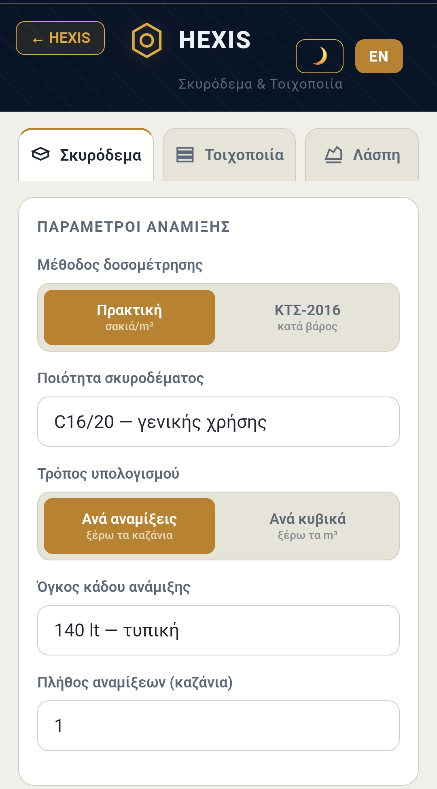
Δίνεις διαστάσεις και παίρνεις σακιά τσιμέντου/ασβέστη, άμμο, νερό, κρυφά σενάζ — και κόστος υλικών με ΦΠΑ 24%, με τιμές που προσαρμόζεις από τα τιμολόγιά σου. Δουλεύει και χωρίς internet.
![]()
RTK Checklist
Λίστα ελέγχου για στήσιμο RTK GNSS (Base + Rover) στο πεδίο — για να μην ξεχνιέται ποτέ τίποτα. Δύο σενάρια: Α · Γνωστό σημείο (στήσιμο σε γνωστή κορυφή) και Β · Localization (προσαρμογή σε τοπικό σύστημα).
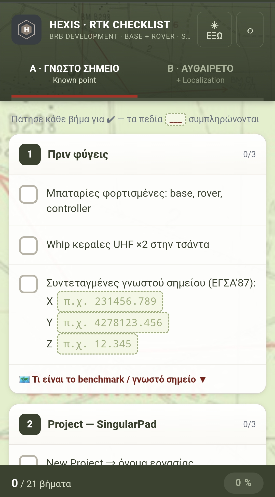
Τσεκάρεις κάθε βήμα καθώς το ολοκληρώνεις — λύση FIX, PDOP, ύψος κεραίας, έλεγχος σε check point. Λειτουργεί πλήρως offline.
Κτηματολόγιο & ΕΓΣΑ'87
Δορυφορικός χάρτης με ζωντανές συντεταγμένες ΕΓΣΑ΄87 και υπόβαθρο ορίων κτηματολογίου (WMS). Μετράς αποστάσεις και εμβαδά απευθείας πάνω στον χάρτη — ιδανικό για αυτοψίες και προέλεγχο ορίων.
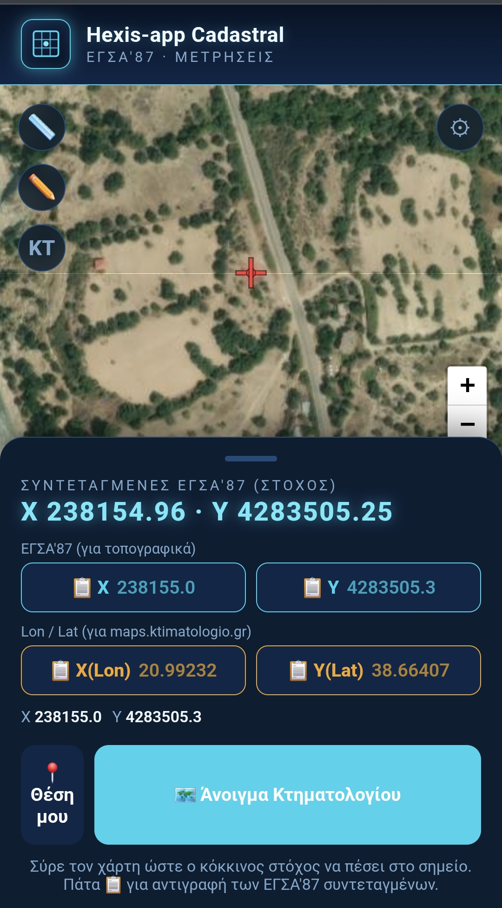
Θα το βρεις σε δύο σημεία: ως αυτόνομη εφαρμογή στο Hub, και μέσα στη Διαχείριση Έργων — στην καρτέλα Χάρτης κάθε έργου με το κουμπί «ΕΓΣΑ / ΚΑΕΚ», κεντραρισμένο στη θέση του έργου.
Νέο — Πανελλαδική βάση ΚΑΕΚ: κάνε απλό κλικ πάνω σε οποιοδήποτε γεωτεμάχιο και η εφαρμογή σου εμφανίζει τον ΚΑΕΚ του με έντονο περίγραμμα, ανοιχτό καρτελάκι (ΚΑΕΚ · εμβαδόν) και τα όμορα γεωτεμάχια γύρω του — κλικ σε όμορο το κάνει νέο επιλεγμένο, ώστε να «περπατάς» τα οικόπεδα ένα-ένα. Αν ξέρεις τον αριθμό, γράψ' τον στο πεδίο ΚΑΕΚ (δέχεται και κοινόχρηστα τύπου ΕΚ — δρόμους, ρέματα, αιγιαλούς) και το 🔎 σε πηγαίνει κατευθείαν πάνω του.
Νέο — Εξαγωγή DXF: με επιλεγμένο γεωτεμάχιο, το κουμπί ⬇ DXF κατεβάζει σχέδιο σε ΕΓΣΑ΄87 με το κύριο τεμάχιο, τα όμορα και τα κοινόχρηστα σε ξεχωριστά layers (KAEK_MAIN / KAEK_OMORA / KAEK_EK) και ετικέτα ΚΑΕΚ στο κέντρο καθενός — ανοίγει απευθείας σε AutoCAD/ProgeCAD πάνω στο τοπογραφικό σου.
Νέο — Μετρήσεις ακριβείας: με ενεργό τον χάρακα 📏 ή τη σχεδίαση ✏️, ο κέρσορας κουμπώνει στις κορυφές των γεωτεμαχίων (πράσινος δακτύλιος = κλείδωμα κορυφής), και δεξιά ανοίγει πλευρικό παράθυρο με κάθε κορυφή σε ΕΓΣΑ΄87, τα μήκη των πλευρών και —για πολύγωνα— εμβαδόν, περίμετρο και πλήθος κορυφών, χωρίς να κρύβει το σχέδιο.
CAD Tools — Check My DXF + LISP
Πακέτο δύο εργαλείων για αψεγάδιαστη Ηλεκτρονική Υποβολή στο Κτηματολόγιο — με μία ενεργοποίηση αποκτάς και τα δύο.
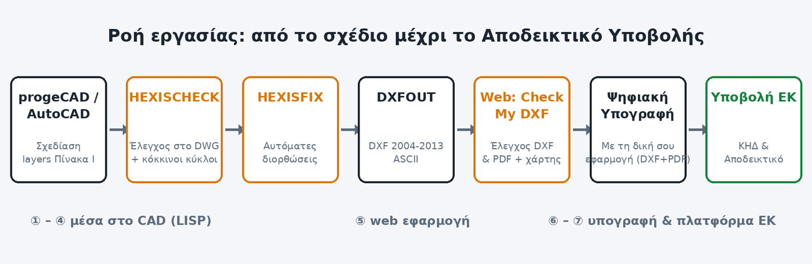
Check My DXF (web)
Προελέγχει τα ψηφιακά διαγράμματα (DXF) και το PDF πριν την Ηλεκτρονική Υποβολή στο Ελληνικό Κτηματολόγιο (ν.4409/2016, άρθρο 40), εφαρμόζοντας τους κανόνες του Τεύχους Τεχνικών Προδιαγραφών ΕΚ (έκδ. 1.3/2024): υποχρεωτικά layers του ΠΙΝΑΚΑ Ι ανά είδος διαγράμματος, επιτρεπτοί τύποι οντοτήτων, κλειστά πολύγωνα, ΚΑΕΚ, όρια ΕΓΣΑ΄87, τοπολογικοί κανόνες, ονοματολογία αρχείων.
Τρία βήματα: 1) Διάλεξε είδος — Τοπογραφικό (Ν.651/77), ΔΓΜ Εγγραπτέας Πράξης ή ΔΓΜ Διόρθωσης/ΤΔΓΜ· για Τοπογραφικό δήλωσε αν η περιοχή έχει λειτουργούν Κτηματολόγιο (καθορίζει το PST_KAEK). 2) Σύρε το DXF — ο έλεγχος τρέχει αμέσως: πράσινο = ΑΠΟΔΕΚΤΟ, πορτοκαλί = αποδεκτό με επισημάνσεις, κόκκινο = σφάλματα με συγκεκριμένη οδηγία διόρθωσης (και εντολή CAD) στο καθένα — και το διάγραμμα εμφανίζεται στη σωστή θέση στον χάρτη. 3) Μόλις περάσει, ξεκλειδώνει ο έλεγχος PDF (§4.6): μονοσέλιδο, dxf+pdf έως 10 MB, ίδιο όνομα με το DXF. Η ψηφιακή υπογραφή γίνεται με την εφαρμογή υπογραφής του μηχανικού, εκτός εργαλείου. Όλα τρέχουν τοπικά στη συσκευή σου.
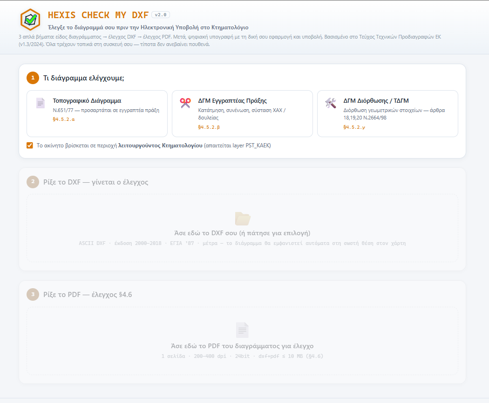
LISP — εγκατάσταση σε AutoCAD & progeCAD
Αντέγραψε το hexis_check_my_dxf.lsp σε μόνιμο φάκελο, π.χ. C:\BRB\LISP\ (όχι Desktop/Downloads). AutoCAD (2004+): εντολή APPLOAD → Load· για μόνιμη φόρτωση Startup Suite → Contents → Add· σε 2016+ αν βγει ειδοποίηση ασφαλείας, Always Load ή πρόσθεσε τον φάκελο στα Trusted Locations. progeCAD: APPLOAD → Add File → Load, και τσέκαρε «Load at startup». Το αρχείο είναι σε κωδικοποίηση Windows-1253 — μην το ξανασώσεις ως UTF-8.
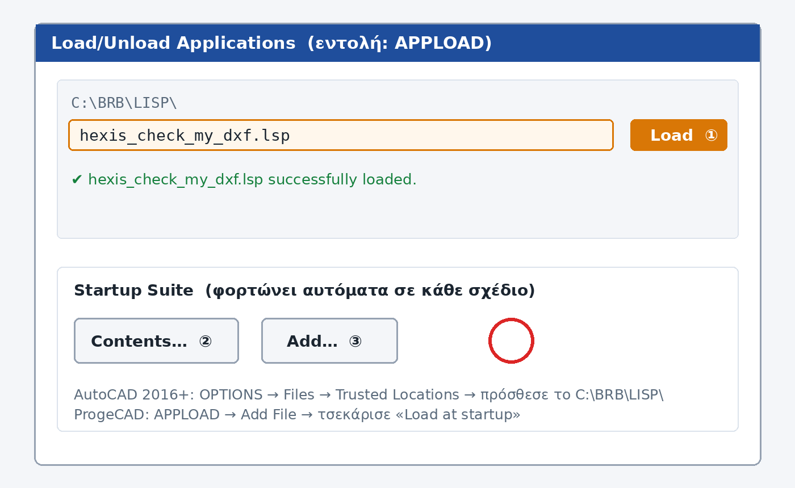
LISP — οι 3 εντολές
HEXISCHECK ελέγχει το τρέχον DWG (ρωτά είδος: TD / PRAXI / DIORTHOSI) — στη γραμμή εντολών βλέπεις μόνο το αποτέλεσμα, ενώ η πλήρης αριθμημένη αναφορά ανοίγει μόνη της σε Notepad. HEXISFIX κάνει αυτόματες διορθώσεις όπου είναι ασφαλές (π.χ. μετονομασίες layers) — μία εντολή UNDO τις αναιρεί όλες. HEXISCLR σβήνει τους κόκκινους κύκλους σήμανσης.
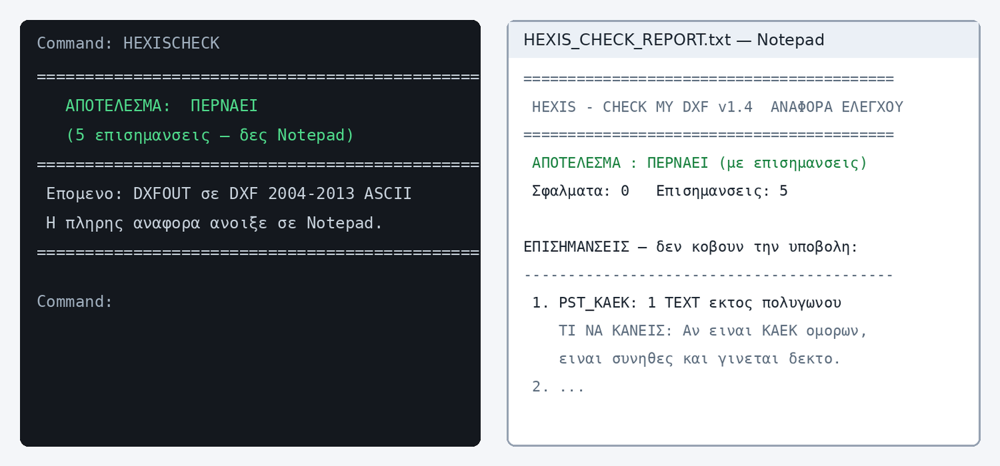
Συχνά: «αλαμπουρνέζικα» ελληνικά στη γραμμή εντολών = λάθος κωδικοποίηση (ξανακατέβασε το αρχικό .lsp)· το DXF δεν φαίνεται στον χάρτη = συντεταγμένες εκτός ΕΓΣΑ΄87 (μετασχημάτισε σε GGRS87/EPSG:2100 σε μέτρα)· οι πορτοκαλί επισημάνσεις δεν μπλοκάρουν ποτέ την υποβολή.
Έλεγχος Δόμησης
Δομημένη σύνταξη πορίσματος Ελεγκτή Δόμησης κατά Ν.4495/2017 και ΚΥΑ 299/2014. Επιλέγεις κατηγορία έργου (Α΄: 1 τελικός έλεγχος, Β΄: ≤2.000 τ.μ. – 2 έλεγχοι, Γ΄: >2.000 τ.μ. – 3 έλεγχοι) και στάδιο (Αρχικός, Ενδιάμεσος, Τελικός) — και εμφανίζονται αυτόματα τα υποχρεωτικά σημεία ελέγχου του άρθρου 4 της ΚΥΑ, ενώ υπολογίζεται και η αμοιβή σου. Διαθέτει εναλλαγή φωτισμού Εξωτ./Εσωτ. για δουλειά και στον ήλιο.
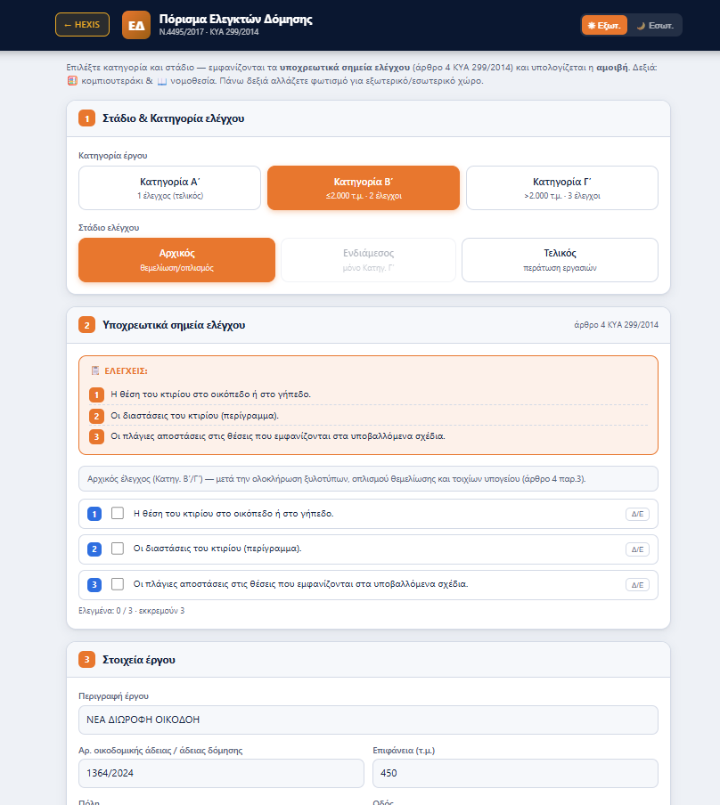
Τσεκάρεις κάθε σημείο ελέγχου (με επιλογή Δ/Ε όπου δεν εφαρμόζεται), συμπληρώνεις τα στοιχεία του έργου, και παράγεται το πλήρες πόρισμα — χωρίς παραλείψεις πεδίων.
Νομοθεσία
Όλη η πολεοδομική νομοθεσία, κωδικοποιημένη σε καρτέλες: Κώδικας Ταγαρά Ν.5306/2026 (481 άρθρα — ενσωματώνει ΝΟΚ, εκτός σχεδίου, αυθαίρετα, χρήσεις γης, οικοδομικές άδειες, ενημερωμένος με ν.5317/2026 και ν.5325/2026· οι αλλαγές του νομοσχεδίου που κατατέθηκε στη Βουλή στις 31.10.2026 εμφανίζονται με ⏳ και πορτοκαλί σήμανση — δεν ισχύουν μέχρι να ψηφιστούν), ΝΟΚ 4067/12, Ν.4495 Αυθαίρετα, Κτιριοδομικός, Αιγιαλός & Ρέματα, Πυροπροστασία, Δασικά, Κτηματολόγιο, Όροι Δόμησης ανά ΚΑΕΚ και πίνακας Αντιστοιχίσεων παλαιών–νέων άρθρων.
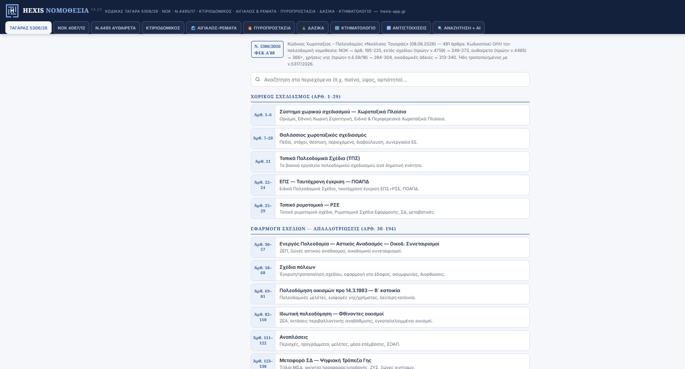
Κάθε ενότητα έχει αναζήτηση στα περιεχόμενα (π.χ. «πισίνα», «ύψος», «αρτιότητα»), και η καρτέλα Αναζήτηση + AI απαντά σε φυσική γλώσσα — ρωτάς όπως θα ρωτούσες συνάδελφο και παίρνεις απάντηση με παραπομπές στα ακριβή άρθρα.
Νέο — Ταμπέλα «Όροι Δόμησης»: γράφεις ΚΑΕΚ ή πατάς πάνω στον χάρτη. Το γεωτεμάχιο έρχεται από το Κτηματολόγιο (εμβαδόν και εκτίμηση προσώπου σε κοινόχρηστο από τα όμορα ΕΚ — διορθώνεται με το χέρι) και από τον Ενιαίο Ψηφιακό Χάρτη (ΤΕΕ/ΥΠΕΝ) αντλούνται: αν είναι εντός σχεδίου, σε οικισμό ή εκτός σχεδίου, Ο.Τ., ΣΔ, κάλυψη, ύψος, αρτιότητα, οικοδομικό σύστημα, χρήσεις γης, ΖΟΕ και τα σχετικά ΦΕΚ. Πρώτα εμφανίζεται ο υπολογισμός: μέγιστη δόμηση, Σ.Α.Ο. (μέγιστη δόμηση ÷ εμβαδόν — σε οικισμούς <2.000 κατ.: έως 200 τ.μ. ΣΔ 1, κάτω από 700 τ.μ. μέγιστο 240 τ.μ., από 700 τ.μ. μέγιστο 400 τ.μ.), μέγιστη κάλυψη και έλεγχος αρτιότητας. Τα αναλυτικά κείμενα των ΦΕΚ ανοίγουν με «Λεπτομέρειες». Η κατάταξη αλλάζει και χειροκίνητα. Με το 📐 Απόσπασμα σχεδίου επιλέγεις κλίμακα εισαγωγής (1:100, 1:200, 1:500, 1:1000), χαρτί (A4/A3) και υπόβαθρο (σαρωμένο γεωαναφερμένο διάγραμμα ΦΕΚ ή μόνο ψηφιοποιημένες γραμμές) και παίρνεις: PDF σε πραγματική κλίμακα με περίγραμμα ΚΑΕΚ, κάνναβο ΕΓΣΑ΄87, βορρά, γραφική κλίμακα (το απόσπασμα περιλαμβάνει ολόκληρο το οικοδομικό τετράγωνο· αν ένα σαρωμένο φύλλο δεν καλύπτει το γεωτεμάχιο, χρησιμοποιείται αυτόματα το επόμενο κατάλληλο διάγραμμα). Στο ίδιο παράθυρο, η λίστα «Πράξεις (ΦΕΚ) στην περιοχή» δείχνει κάθε ΦΕΚ που εμφανίζεται στις γραμμές του αποσπάσματος (π.χ. 612Α/1935, 682Δ/1990) με το τι ορίζει (ρυμοτομική, οικοδομική, Ο.Τ. κ.λπ.): ΦΕΚ (PDF) για το κείμενο και Διάγραμμα γεωαναφ. για ολόκληρο το σαρωμένο διάγραμμα της πράξης σε ΕΓΣΑ΄87 — ZIP με JPG + JGW και DXF που το τοποθετεί μόνο του στο AutoCAD μαζί με το PST_KAEK, συν TFW για το πρωτότυπο GeoTIFF του ΤΕΕ. Οι Τεχνικές Εκθέσεις και τα Διαγράμματα Εφαρμογής της ΥΔΟΜ δεν δημοσιεύονται στον Ενιαίο Ψηφιακό Χάρτη, οπότε δεν είναι διαθέσιμα και τους όρους δόμησης αναλυτικά, ή ZIP για AutoCAD με DXF (ΕΓΣΑ΄87, μέτρα — layers PST_KAEK, PST_KAEK_OMORA, RYMOTOMIKI, OIKODOMIKI, OT, ORIO_OIKISMOU κ.ά.) και γεωαναφερμένο TIFF + TFW που μπαίνει αυτόματα στη σωστή θέση. Αν το γεωτεμάχιο δεν χωράει στην κλίμακα, το εργαλείο σε ειδοποιεί. Μέσα στο CAD: με το HEXISNET.lsp (LISP Βιβλιοθήκη) γράφεις ΚΑΕΚ στο OROIDOM (επιλογή 5) ή στο DILOSI («Συμπλήρωση από ΚΑΕΚ») και οι όροι έρχονται αυτόματα — σύνδεση με email και κωδικό HEXIS-APP. Στο OROIDOM (επιλογή 5) μπαίνει και το απόσπασμα ρυμοτομικού κάτω από τον πίνακα: ρυμοτομική/οικοδομική γραμμή, Ο.Τ. με αριθμούς, γεωτεμάχια Κτηματολογίου και το ΚΑΕΚ σε layer HX_PST_KAEK, με βορρά και γραφική κλίμακα — το μέγεθος ακολουθεί το ύψος γραμματοσειράς του πίνακα. Μόνο του: εντολή HEXISAPOSPASMA. Εκτός σχεδίου υπολογίζεται και η μέγιστη δόμηση κατοικίας (άρ. 256). Εκτός σχεδίου η μέγιστη κάλυψη δεν υπερβαίνει τη μέγιστη δόμηση (π.χ. 10% του γηπέδου αλλά όχι πάνω από τα τ.μ. δόμησης) — έτσι γράφεται και στον πίνακα κάλυψης του τοπογραφικού. Όπου ο ΕΨΧ δίνει μόνο Μέσο ΣΔ τομέα ΓΠΣ, δεν υπολογίζεται μέγιστη δόμηση — ο ΣΔ του οικοπέδου προκύπτει από το ΦΕΚ. Τα στοιχεία είναι ενημερωτικά — δεν υποκαθιστούν τη βεβαίωση της ΥΔΟΜ.
Νέο — Τοπογραφικό κατάτμησης / συνένωσης (Pro): στο Τοπογραφικό, καρτέλα «Κατάτμηση / Συνένωση», διαλέγεις το είδος.
- Κατάτμηση — αυτόματος χωρισμός: σε ίσα μέρη (2 = στη μέση) ή σε συγκεκριμένα εμβαδά (π.χ.
4000ή2500 + 1800— το υπόλοιπο πάει στο τελευταίο), με γραμμή παράλληλη ή κάθετη σε πλευρά που διαλέγεις, ή που περνά από σταθερή κορυφή. Τα εμβαδά φαίνονται αμέσως και με «✂ Εφαρμογή στο τοπογραφικό» μπαίνουν στο σχέδιο. - Κατάτμηση — από το αρχείο: αν στο DXF έχεις σχεδιάσει τα νέα γεωτεμάχια ως κλειστές πολυγραμμές μέσα στην ιδιοκτησία, τα τσεκάρεις από τη λίστα.
- Συνένωση: το ενιαίο περίγραμμα είναι η ιδιοκτησία (TOPO_PROP) και τσεκάρεις τα αρχικά γεωτεμάχια — κλειστές πολυγραμμές του αρχείου ή τα γεωτεμάχια του Κτηματολογίου που βρίσκονται μέσα του.
Στο σχέδιο: γραμμές κατάτμησης (layer KATATMISI) ή όρια αρχικών (ARXIKA_ORIA), νέες κορυφές Κ1, Κ2… (οι κοινές κρατούν το όνομα της ιδιοκτησίας), «ΓΕΩΤΕΜΑΧΙΟ Α — Ε = …» σε κάθε τμήμα, πίνακας συντεταγμένων για κάθε γεωτεμάχιο και πίνακας κατάτμησης/συνένωσης με εμβαδά, σύνολο, διαφορά και αρτιότητα ως προς το εμβαδόν από τους όρους δόμησης (ο έλεγχος προσώπου γίνεται από τον μηχανικό). Στο DXF τα γεωτεμάχια μπαίνουν και ως κλειστά πολύγωνα (NEA_GEOTEMAXIA / ARXIKA_GEOTEMAXIA).
GEOmetry — Τι κάνω, βήμα βήμα (σύντομος οδηγός στο κουμπί ? Οδηγός πάνω δεξιά· η αρχική σελίδα δείχνει μόνο «Ρίξε εδώ το PDF ή το DXF σου») · ▶ Πλήρης οδηγός με βίντεο και εικόνες
1 · Συντεταγμένες — δεν σχεδιάζεις τίποτα. Βγαίνουν από τους πίνακες συντεταγμένων που είναι γραμμένοι στο σχέδιο, ακριβώς όπως είναι (σε DXF χωρίς πίνακες, από τα κλειστά πολύγωνα σε ΕΓΣΑ 87).
- Ανέβασε το PDF του τοπογραφικού ή του διαγράμματος κάλυψης (από CAD, σκαναρισμένο ή φωτογραφία κινητού) ή το DXF.
- Καρτέλα 1 Πίνακες: πράσινο ✓ = πέρασαν τους ελέγχους. Μια κόκκινη τιμή τη διορθώνεις στο κελί, όπως είναι γραμμένη στο χαρτί.
- Πάνω δεξιά: Excel / CSV / TXT / DXF και Αναφορά PDF.
2 · Τοπογραφικό — τι σχεδιάζεις από πριν στο DXF (ΕΓΣΑ 87, μέτρα):
- Υποχρεωτικό: το όριο της ιδιοκτησίας, μία κλειστή πολυγραμμή στο layer
TOPO_PROP. - Κτίσματα: κλειστές πολυγραμμές στο
BLD, με ένα κείμενο μέσα (π.χ. 1Κ, 2Π). - Υλοποιημένα όρια: και στο
BOUND_IMPL. Αλλιώς τίποτα: μπαίνουνBOUND_UNIMPL. - Δρόμοι, περιφράξεις, φρεάτια, ονόματα δρόμων: στα δικά σου layers, περνούν όπως είναι.
- Δεν σχεδιάζεις: πίνακες, πινακίδα, κάνναβο, βορρά, ΚΑΕΚ, όμορους.
- Από το HEXIS PAD: το «…_GEOmetry.dxf» είναι ήδη έτοιμο, το τοπογραφικό ξεκινά μόνο του.
- Ανέβασε το DXF.
- Καρτέλα 3 Τοπογραφικό → «Τοπογραφικό διάγραμμα» (βρίσκει ΚΑΕΚ, όρους δόμησης, όμορους, αιγιαλό, δασικά).
- Βήματα 1–8 με Επόμενο →: ιδιοκτήτης & θέση, όμοροι, δηλώσεις με αστική/αγροτική, φωτογραφίες, πινακίδα.
- Βήμα 8 Εκτύπωση: κλίμακα, χαρτί, Προεπισκόπηση & διόρθωση (μετακίνηση/στροφή/νέα κείμενα).
- PDF και DXF — το DXF ελέγχεται αυτόματα για υποβολή στο Κτηματολόγιο (ΚΗΔ).
3 · Διάγραμμα Γεωμετρικών Μεταβολών — τι σχεδιάζεις από πριν στο DXF:
- Διόρθωση ορίων: μόνο το μετρημένο όριο στο
TOPO_PROP. Τα όρια του Κτηματολογίου και τα τμήματα Δ / Α τα βγάζει το πρόγραμμα. - Κατάτμηση: αρχικό στο
TOPO_PROP, κάθε νέο γεωτεμάχιο στοTOPO_PROP_NEW. - Συνένωση: το ενιαίο νέο στο
TOPO_PROP_NEW. - Κάθετες / ΧΑΧ: κάθε χώρος κλειστή πολυγραμμή στο
VST.
- Ανέβασε το DXF.
- Καρτέλα 2 Κτηματολόγιο → «Εύρεση ΚΑΕΚ», αστική/αγροτική: δες αν χρειάζεται ΔΓΜ.
- Διάγραμμα Γεωμετρικών Μεταβολών → καρτέλα 4 ΔΓΜ: τμήματα Δ (προσάρτηση) / Α (αποκοπή), ποιες μεταβολές εφαρμόζονται.
- Στοιχεία πινακίδας → PDF και DXF Κτηματολογίου (ελέγχεται αυτόματα).
Νέο — GEOmetry Basic και Pro: δίπλα στον τίτλο του GEOmetry φαίνεται η έκδοσή σου — PRO · έως … με την ημερομηνία λήξης, ή BASIC. το Basic (35€ / έτος + ΦΠΑ) δίνει τους πίνακες συντεταγμένων από PDF ή DXF, όλες τις εξαγωγές (Excel, CSV, TXT, DXF, Αναφορά PDF), τα γεωτεμάχια ΚΑΕΚ και τον χάρτη. Το Pro (190€ / έτος + ΦΠΑ, περιλαμβάνει και το Basic) προσθέτει το Τοπογραφικό διάγραμμα σε φύλλο (DXF/PDF), τα Διαγράμματα Γεωμετρικών Μεταβολών (διόρθωση ορίων, κατάτμηση, συνένωση, ΧΑΧ), την απάντηση στο «απαιτείται ΔΓΜ;», τη δήλωση συμβατότητας και το PDF hash. Χωρίς Pro, η καρτέλα Τοπογραφικό και το κουμπί Διάγραμμα Γεωμετρικών Μεταβολών έχουν την ένδειξη Pro και ανοίγουν τη σελίδα ενεργοποίησης: γράφεις το κλειδί σου (μορφή GEO-XXXX-XXXX-XXXX) στο «Έχεις κλειδί Pro;» και πατάς Ενεργοποίηση, ή στέλνεις Αίτημα ενεργοποίησης. Κάθε κλειδί ενεργοποιείται σε έναν λογαριασμό. Το Pro χρειάζεται σύνδεση στο internet για να ανοίξει.
Νέο — Προεπισκόπηση & διόρθωση στην οθόνη (Pro): πριν βγάλεις PDF ή DXF, πάτα ✎ Προεπισκόπηση & διόρθωση στο Τοπογραφικό. Ανοίγει ο Σχεδιαστικός έλεγχος με όλο το φύλλο. Σύρε μια ετικέτα (π.χ. αριθμό κορυφής, απόσταση, ΚΑΕΚ) για να τη μετακινήσεις, ή σύρε έναν πίνακα, το υπόμνημα, το απόσπασμα, τον βορρά ή την κλίμακα για να τα μετακινήσεις ολόκληρα. Διπλό κλικ (ή διπλό πάτημα στο κινητό) σε ένα κείμενο το αλλάζει· κενό κείμενο το κρύβει. Με A− / A+ αλλάζεις το μέγεθος του επιλεγμένου κειμένου, με Απόκρυψη το κρύβεις, με ↶ Αναίρεση (ή Ctrl+Z) γυρνάς πίσω και με Επαναφορά σβήνεις όλες τις διορθώσεις. Τροχός ποντικιού ή − / Όλο / + για ζουμ, σύρσιμο στο κενό για μετακίνηση της προβολής. Οι διορθώσεις περνούν ίδιες στο PDF, στο SVG και στο DXF (κουμπιά μέσα στον επεξεργαστή). Οι τιμές των πινάκων αλλάζουν από τα στοιχεία της αποτύπωσης, ώστε PDF και DXF να συμφωνούν. Κάτω αριστερά, στη ζώνη του διπλού πλαισίου, το φύλλο γράφει με μικρά γράμματα «HEXIS-APP GEOmetry Pro · powered by BRB Development ΜΟΝ. Ι.Κ.Ε. · Συντάχθηκε: ημερομηνία», και κάτω δεξιά τις πηγές δεδομένων (π.χ. «Πηγή δεδομένων: Ν.Π.Δ.Δ. ΕΛΛΗΝΙΚΟ ΚΤΗΜΑΤΟΛΟΓΙΟ»).
Νέο — το Pro σε μία συσκευή κάθε φορά: το κλειδί Pro δουλεύει σε μία συσκευή τη φορά. Η πρώτη συσκευή που ανοίγει το Pro το «κρατά». Για να το περάσεις σε άλλη συσκευή, πάτα Αποδέσμευση δίπλα στην ένδειξη PRO πάνω στον τίτλο: το κλειδί «παρκάρει», το Pro κλείνει σε αυτή τη συσκευή και ανοίγει στην επόμενη που θα μπεις, με την ίδια λήξη. Αν ανοίξεις το GEOmetry σε δεύτερη συσκευή χωρίς αποδέσμευση, η καρτέλα Τοπογραφικό γράφει σε ποια συσκευή είναι ενεργό το κλειδί. Αν η παλιά συσκευή χάθηκε ή χάλασε, μετά από 48 ώρες χωρίς χρήση εμφανίζεται το κουμπί Μεταφορά του κλειδιού εδώ. Για άμεση μεταφορά στείλε αίτημα στο HEXIS-APP.
Νέο — GEOmetry σε καρτέλες: αριστερά υπάρχουν καρτέλες Πίνακες · Κτηματολόγιο · Τοπογραφικό · ΔΓΜ — κάθε μία ανοίγει μόνο τα δικά της. Το Τοπογραφικό έχει δικές του υπο-καρτέλες: Σύνοψη, Ιδιοκτήτης & θέση, Όμοροι, Δηλώσεις & μηχανικός, Φωτογραφίες & χάρτες, Πινακίδα, Εκτύπωση· τα κουμπιά εξαγωγής (DXF/PDF) είναι πάντα ορατά. Στο σχέδιο του τοπογραφικού μπαίνουν και οι γραμμές του σχεδίου πόλης από τον ΕΨΧ (ρυμοτομική σε DBOUND_RYM, οικοδομική, όριο οικισμού, κοινόχρηστα, αριθμοί Ο.Τ., ονόματα οδών) και όλες οι υπόλοιπες γραμμές του αρχείου σου με τα δικά τους layers (π.χ. πράξη εφαρμογής).
Όροι δόμησης: όταν το ακίνητο δεν βρίσκεται σε εγκεκριμένο σχέδιο ούτε σε όριο οικισμού, η κατάσταση γράφεται «Εκτός σχεδίου». Η κάλυψη δίνεται μόνο ως ποσοστό (π.χ. 10%) — δεν υπολογίζονται τετραγωνικά επιτρεπόμενης κάλυψης.
Γραμμή αιγιαλού / παραλίας από συντεταγμένες: στο πάνελ του Τοπογραφικού, κουμπί «⤒ Συντεταγμένες αιγιαλού/παραλίας». Δέχεται: PDF ΦΕΚ με πίνακα συντεταγμένων (όχι σαρωμένο), TXT/CSV με μία κορυφή ανά γραμμή, π.χ. Α1,207400.12,4276950.30 (Α = αιγιαλός, Π = παραλία, ΠΑ = παλαιός αιγιαλός· διαχωριστικό κόμμα, ερωτηματικό, tab ή κενό) ή DXF με τις γραμμές (layer με ΑΙΓ/AIG = αιγιαλός, ΠΑΡ/PAR = παραλία, ΠΑΛ/PAL = παλαιός αιγιαλός). Οι γραμμές μπαίνουν στο σχέδιο με τις κορυφές τους και υπολογίζεται η ακριβής απόσταση του ορίου από την οριογραμμή αιγιαλού, που γράφεται και στη δήλωση μηχανικού. Γραμμή αιγιαλού από εικόνα χάρτη δεν μπαίνει πλέον στο σχέδιο.
Τομή με αιγιαλό / παραλία: μόλις δοθούν οι συντεταγμένες της γραμμής αιγιαλού (και παραλίας), υπολογίζονται τα τμήματα της ιδιοκτησίας: ΑΙΓ εντός αιγιαλού (από τη θάλασσα ως τη γραμμή αιγιαλού), ΠΑΡ εντός παραλίας (ανάμεσα στις δύο γραμμές) και ΕΝ εναπομένον τμήμα. Βγαίνει πίνακας εμβαδών ανά ζώνη, πίνακας συντεταγμένων κορυφών για κάθε τμήμα, ετικέτες στο σχέδιο (layers TMHMA_AIGIALOU / TMHMA_PARALIAS / ENAPOMENON_TMHMA στο DXF) και η πρόταση στη δήλωση Ν.651/77: «Βρίσκεται εν μέρει εντός της καθορισμένης ζώνης αιγιαλού/παραλίας (τμήμα εντός αιγιαλού Ε = … τ.μ., τμήμα εντός παραλίας Ε = … τ.μ. και εναπομένον τμήμα Ε = … τ.μ.)». Η πλευρά της θάλασσας βρίσκεται από τη γραμμή παραλίας (που είναι πάντα προς την ξηρά) ή από την ακτογραμμή.
Νέο — Δικά σου κείμενα στο σχέδιο: στον Σχεδιαστικό έλεγχο πάτα ＋ Νέο κείμενο και μετά πάτα στο σημείο του φύλλου όπου το θέλεις (π.χ. «Αγροτική οδός», «Ρέμα», «Όμορος»). Γράψε το κείμενο και OK. Μετά το σέρνεις όπου θέλεις, το μεγαλώνεις με A+, το στρίβεις ελεύθερα: σύρε τη μωβ λαβή που εμφανίζεται πάνω από το επιλεγμένο κείμενο (κουμπώνει μόνο του σε οριζόντιο/κατακόρυφο, με Shift ανά 15°), ή γράψε τη γωνία στο πεδίο ∠ και Enter, ή πάτα ∥ σε γραμμή και δύο σημεία πάνω στη γραμμή του δρόμου για να μπει ακριβώς παράλληλα· τα ⟲ / ⟳ στρίβουν ανά 15°. Η στροφή δουλεύει και στα υπάρχοντα κείμενα του σχεδίου, το αλλάζεις με Αλλαγή κειμένου ή διπλό κλικ, και το σβήνεις με Απόκρυψη. Βγαίνει ίδιο στο PDF, στο SVG και στο DXF (layer SXOLIA).
Νέο — ΚΑΕΚ στη Θέση της πινακίδας: στην πινακίδα, στο πεδίο «Θέση», κάτω από τη θέση του έργου μπαίνει πάντα και ο ΚΑΕΚ (π.χ. «ΚΑΕΚ 340160302330») — στο τοπογραφικό, στο ΔΓΜ και στη δική σου πινακίδα DXF (στο κελί με την ετικέτα «Θέση»). Αν θέλεις τον ΚΑΕΚ αλλού στη δική σου πινακίδα, γράψε στο DXF το πεδίο {ΚΑΕΚ}.
Νέο — Συμβατότητα με το Κτηματολόγιο μέσα στο τοπογραφικό: στο βήμα 4 «Δηλώσεις & μηχανικός» διαλέγεις αστική (Uo 0,50 m) ή αγροτική (Uo 2,00 m)· προτείνεται αυτόματα από τη «Θέση» (εκτός σχεδίου & οικισμού → αγροτική). Αμέσως φαίνεται το αποτέλεσμα (ΣΥΜΒΑΤΟ / οριακά / απαιτείται ΔΓΜ) με εμβαδά, ανοχή και απόκλιση ορίων, σε σύγκριση με το γεωτεμάχιο ΚΑΕΚ του τοπογραφικού. Στο σχέδιο, στο PDF και στο TXT μπαίνει η ΔΗΛΩΣΗ ΣΥΜΒΑΤΟΤΗΤΑΣ ΜΕ ΤΟ ΚΤΗΜΑΤΟΛΟΓΙΚΟ ΔΙΑΓΡΑΜΜΑ του συντάκτη (άρθρο 13α ν.2664/1998) με υπογραφή· με «χωρίς δήλωση συμβατότητας» βγαίνει εκτός.
Νέο — Νομοθεσία στους όρους δόμησης: ο πίνακας «ΟΡΟΙ ΔΟΜΗΣΗΣ» του τοπογραφικού γράφει πλέον και το θεσμικό πλαίσιο της περιοχής με τη νέα κωδικοποίηση του ν.5306/2026: εντός σχεδίου ΝΟΚ (άρ.195–225), οικισμός <2.000 κατ. ΠΔ 24.4/1985 και ΦΕΚ 289/ΑΑΠ/2011 (μεταβατικά, άρ.247 §3), εκτός σχεδίου άρ.250–251, 256 και 273 (πρώην άρ.32–33 ν.4759/2020). Στη γραμμή «ΠΡΑΞΕΙΣ ΠΕΡΙΟΧΗΣ» μπαίνουν οι πράξεις που βρίσκονται στο σημείο (έγκριση/τροποποιήσεις σχεδίου, ΓΠΣ/ΣΧΟΟΑΠ, ΖΟΕ, ΠΔ προστασίας, όρια οικισμού) με το ΦΕΚ τους.
Νέο — DXF έτοιμο για υποβολή (ΚΗΔ): το DXF του τοπογραφικού ελέγχεται αυτόματα με τους κανόνες του Τεύχους Κτηματολογίου μόλις κατεβαίνει· αν περνά, γράφει «✓ Περνά τον έλεγχο Κτηματολογίου», αλλιώς δείχνει τι λείπει. Το όνομα αρχείου βγαίνει σωστό (π.χ. topo_0900252013.dxf: έως 15 λατινικοί χαρακτήρες). Ο ΚΑΕΚ μπαίνει στο layer PST_KAEK μόνο με τα 12 ψηφία και μέσα στο πολύγωνο. Στα layers του Πίνακα Ι μπαίνουν μόνο οι επιτρεπτές οντότητες: οι γραμμές (π.χ. ρυμοτομική DBOUND_RYM) γίνονται ενιαίες LWPOLYLINE και ό,τι άλλο πάει σε βοηθητικό layer.
Νέο — Πίνακες στο DXF όπως στο PDF: οι τίτλοι των πινάκων είναι στο κέντρο και οι επικεφαλίδες σπάνε σε γραμμές ακριβώς όπως στο PDF· οι πίνακες μένουν επεξεργάσιμοι (TABLE), χωρίς explode.
Νέο — Τοπογραφικό σε βήματα: οι καρτέλες είναι αριθμημένες (1 Πίνακες, 2 Κτηματολόγιο, 3 Τοπογραφικό, 4 ΔΓΜ) και μέσα στο Τοπογραφικό τα στοιχεία μπαίνουν σε 8 βήματα: 1 Σύνοψη, 2 Ιδιοκτήτης & θέση, 3 Όμοροι, 4 Δηλώσεις & μηχανικός, 5 Κατάτμηση / Συνένωση, 6 Φωτογραφίες & χάρτες, 7 Πινακίδα, 8 Εκτύπωση. Κάτω γράφει «Βήμα 2 από 8» με κουμπιά ← Βήμα 1 και Επόμενο →· στο τελευταίο βήμα ανοίγει η Προεπισκόπηση & διόρθωση.
Νέο — Κείμενα του DXF σου στο σχέδιο: ό,τι κείμενο έχεις γράψει στο DXF (ονόματα δρόμων, «2Π», «1Κ», σημειώσεις) περνά στο τοπογραφικό στη θέση, τη γωνία, το μέγεθος και το layer του, όπως το σχέδιο· το ίδιο και κύκλοι/τόξα (π.χ. φρεάτια). Δεν περνούν μόνο κείμενα από πλαίσια, πινακίδες και πίνακες συντεταγμένων, που τα φτιάχνει το εργαλείο. Στον Σχεδιαστικό έλεγχο μετακινούνται, στρίβουν, αλλάζουν ή κρύβονται όπως όλα τα άλλα.
Νέο — Copy και έτοιμα κείμενα: στον Σχεδιαστικό έλεγχο διάλεξε ένα κείμενο και πάτα Copy: κάθε πάτημα στο φύλλο βάζει αντίγραφο με το ίδιο κείμενο, μέγεθος και γωνία· Esc για τέλος. Στο ＋ Νέο κείμενο υπάρχουν έτοιμα κουμπιά 1Π, 2Π, 3Π, 1Κ, 2Κ, 3Κ, Αγροτική / Δημοτική / Επαρχιακή οδός, Ρέμα, Όμορος, Περίφραξη — ή γράφεις δικό σου.
Νέο — Όρια ιδιοκτησίας: μπαίνουν πάντα ως BOUND_UNIMPL (μη υλοποιημένα). Γίνονται BOUND_IMPL μόνο αν το επιλέξεις στο βήμα Εκτύπωση ή αν το DXF σου έχει ήδη τα όρια στο layer BOUND_IMPL.
Νέο — Σφραγίδα / εικόνα στο σχέδιο: στον Σχεδιαστικό έλεγχο πάτα 🖼 Εικόνα, διάλεξε JPEG ή PNG (π.χ. τη σφραγίδα σου — το λευκό φόντο γίνεται αυτόματα διάφανο, ώστε να μπαίνει χωρίς πλαίσιο πάνω στο σχέδιο) και πάτα στο σημείο του φύλλου. Τη σέρνεις για να τη μετακινήσεις, αλλάζεις μέγεθος σέρνοντας τη μωβ πάνω-δεξιά γωνία ή με A+ / A− (το πλάτος σε mm φαίνεται κάτω), και τη σβήνεις με Απόκρυψη. Βγαίνει στο PDF, στο SVG και στο DXF (το DXF κατεβαίνει σε ZIP με την εικόνα και world file στη θέση της).
Νέο — Δασικός χάρτης μόνο στην ιδιοκτησία: στο τοπογραφικό σχεδιάζεται μόνο το κομμάτι του δασικού πολυγώνου που πέφτει μέσα στο δικό σου όριο (γραμμοσκίαση και περίγραμμα), με την κατηγορία του (π.χ. «Δ1 · ΑΑ»). Δεν σχεδιάζεται πια το περίγραμμα του δασικού πολυγώνου έξω από την ιδιοκτησία (το «τετράγωνο» γύρω από το οικόπεδο) ούτε γειτονικά δασικά πολύγωνα που δεν σε αγγίζουν.
Νέο — Θέση στην πινακίδα: στο κελί «Θέση» μπαίνουν σε δική τους γραμμή η θέση, η Τοπική Κοινότητα, η Δημοτική Ενότητα, ο Δήμος και τελευταίος ο ΚΑΕΚ (από τα πεδία του βήματος 2).
Νέο — «Νέα εργασία»: το κουμπί πάνω αριστερά (πρώην «Νέο PDF») ρωτά πρώτα «Νέα εργασία;». Στο Pro η τρέχουσα έχει ήδη αποθηκευτεί και τη βρίσκεις στις «Πρόσφατες εργασίες»· στο Basic σε προειδοποιεί ότι οι αλλαγές της δεν κρατιούνται.
Νέο — Αυτόματη αποθήκευση εργασίας (Pro): ό,τι κάνεις σε ένα αρχείο (διορθώσεις συντεταγμένων, στοιχεία πινακίδας και δηλώσεων, ιδιοκτήτες, φωτογραφίες, κείμενα και μετακινήσεις στο σχέδιο, επιλογές ΔΓΜ, γραμμές αιγιαλού από ΦΕΚ) σώζεται αυτόματα κάθε λίγα δευτερόλεπτα σε αυτή τη συσκευή. Στην αρχική σελίδα εμφανίζονται οι Πρόσφατες εργασίες (έως 20): πάτα Συνέχεια και ανοίγει από εκεί που σταμάτησες, χωρίς να ξαναφορτώσεις το αρχείο. Αν ξανανεβάσεις το ίδιο αρχείο, σε ρωτά αν θέλεις συνέχεια ή από την αρχή. Με ✕ σβήνεις μια εργασία από τη συσκευή. Οι εργασίες μένουν στον browser της συσκευής — αν καθαρίσεις τα δεδομένα του browser, χάνονται.
Νέο — Κάθε εργασία με τα δικά της στοιχεία: όταν πατάς «Συνέχεια» σε μια πρόσφατη εργασία, ανοίγει με τον δικό της ιδιοκτήτη, θέση, εργοδότη, αριθμό σχεδίου, φωτογραφίες και διορθώσεις — όχι με της τελευταίας εργασίας που έτρεξε. Νέο αρχείο ξεκινά καθαρό· μόνο «Τεχνικό γραφείο» και «Μηχανικός / Ομάδα μελέτης» μένουν για όλες τις εργασίες.
Νέο — Το Διάγραμμα σε βήματα, όπως το τοπογραφικό: η καρτέλα ΔΓΜ έχει τώρα αριθμημένα βήματα με «← Βήμα» / «Επόμενο →»: 1 Σύνοψη (είδος ΔΓΜ, γεωτεμάχιο, εμβαδά, έλεγχοι, σχήμα) · 2 Ιδιοκτήτες & μεταβολές · 3 Τμήματα · 4 Στοιχεία & μηχανικός (ιδιοκτήτης, έργο, θέση, ημερομηνία, και τα δικά σου στοιχεία που γράφεις μία φορά) · 5 Πινακίδα & σφραγίδα (ποια πινακίδα, «＋ Δική μου πινακίδα (DXF)», «＋ Σφραγίδα (εικόνα)») · 6 Εκτύπωση (χαρτί & κλίμακα με ένα πάτημα, «👁 Δες το φύλλο», «⬇ PDF για εκτύπωση», «⬇ DXF για CAD», και τα αρχεία του Κτηματολογίου). Τα σπάνια (κλίμακα με το χέρι, ομάδα μελέτης, LISP, δήλωση ΕΓΣΑ87) είναι στο «Περισσότερα». Τα κύρια κουμπιά είναι σκούρο μπλε με λευκά γράμματα, ώστε να διαβάζονται εύκολα.
Νέο — Πολλές πινακίδες: μπορείς να ανεβάσεις όσες πινακίδες DXF θέλεις (έως 12) με «⤒ Ανέβασε άλλη DXF πινακίδας». Μένουν όλες στον λογαριασμό σου και διαλέγεις από λίστα: στο Τοπογραφικό → 7 Πινακίδα → «Πινακίδα τοπογραφικού» (ή «Προεπιλεγμένη του HEXIS-APP»), και στο ΔΓΜ → 5 Πινακίδα & σφραγίδα → «Ποια πινακίδα;»: «Κτηματολογίου», «Ίδια με το τοπογραφικό» ή οποιαδήποτε από τις δικές σου. Με «✕ Αφαίρεση» βγάζεις από τη λίστα την πινακίδα που είναι επιλεγμένη. Η επιλογή μένει μέχρι να την αλλάξεις.
Νέο — Η δική σου πινακίδα δεν αλλάζει: στην πινακίδα DXF που ανεβάζεις, τα κείμενα μένουν όπως τα έγραψες (Εργοδότης, Έργο, Θέση, Ημερομηνία, Κλίμακα κ.λπ.). Η εφαρμογή συμπληρώνει μόνο το όνομα του εργοδότη και το όνομα του έργου, και μόνο όταν το κελί τους είναι άδειο. Ό,τι άλλο θέλεις να συμπληρώνεται, γράψε το στην πινακίδα ως πεδίο σε άγκιστρα, π.χ. {ΘΕΣΗ}, {ΗΜΕΡΟΜΗΝΙΑ}.
Νέο — Ιδιοκτήτης και σφραγίδα στο Διάγραμμα: στην καρτέλα ΔΓΜ, η ενότητα Ιδιοκτήτης & έργο έχει Ιδιοκτήτη / Εργοδότη, Έργο, Θέση, Αρ. σχεδίου και Ημερομηνία (μπαίνουν στην πινακίδα, μόνο για αυτή την εργασία) και από κάτω τους ιδιοκτήτες ανά ΚΑΕΚ, που γράφονται στο σχέδιο. Το κουμπί 🖼 Σφραγίδα μηχανικού (εικόνα) βάζει τη σκαναρισμένη σφραγίδα σου (JPEG/PNG, το λευκό φόντο γίνεται διάφανο) κατευθείαν στο κουτί «Σφραγίδα Μελετητή» της πινακίδας· με ✕ τη βγάζεις, και από την «✎ Προεπισκόπηση & διόρθωση στην οθόνη» τη μετακινείς ή αλλάζεις μέγεθος.
Νέο — Στοιχεία μηχανικού στο Διάγραμμα: στην καρτέλα ΔΓΜ, κάτω από «Στοιχεία πινακίδας», η ενότητα Μηχανικός έχει πεδία για Μηχανικό, Ειδικότητα, Α.Μ. ΤΕΕ και Τεχνικό γραφείο. Μπαίνουν αμέσως στην πινακίδα (στη «Ομάδα Μελέτης», αν δεν έγραψες άλλη ομάδα), είναι τα ίδια με του τοπογραφικού και μένουν για όλες τις εργασίες μέχρι να τα αλλάξεις.
Νέο — Σφραγίδα, πινακίδα και διορθώσεις και στο Διάγραμμα (ΔΓΜ, Pro): στην καρτέλα ΔΓΜ, κάτω από «Εκτύπωση», πάτα ✎ Προεπισκόπηση & διόρθωση στην οθόνη. Ανοίγει το φύλλο όπως θα τυπωθεί, με τα ίδια εργαλεία του τοπογραφικού: σύρε πίνακες, υπόμνημα, βορρά, κλίμακα και σημειώσεις, άλλαξε/μεγέθυνε/στρίψε κείμενα, πρόσθεσε ＋ Νέο κείμενο και 🖼 Εικόνα (σφραγίδα JPEG/PNG). Οι διορθώσεις περνούν στο PDF πινακίδας, στο DXF εκτύπωσης (οι εικόνες σε ZIP με world file) και στην εικόνα SVG, και σώζονται με την εργασία. Αν έχεις ανεβάσει δική σου πινακίδα DXF, μπαίνει και στο διάγραμμα· από το «Πινακίδα διαγράμματος» επιστρέφεις στην πινακίδα του Κτηματολογίου όποτε θέλεις.
Νέο — Η πινακίδα σου μένει στον λογαριασμό (Pro): η πινακίδα DXF και το λογότυπο ανεβαίνουν μία φορά και αποθηκεύονται στον λογαριασμό σου HEXIS. Σε άλλη συσκευή ή browser, μόλις συνδεθείς, τα βρίσκεις έτοιμα. Με «Αφαίρεση» φεύγουν και από τον λογαριασμό. Η πινακίδα είναι προσωπική: κάθε μηχανικός βλέπει μόνο τη δική του· όποιος δεν έχει ανεβάσει δική του, παίρνει την ενσωματωμένη πινακίδα του προγράμματος. Αν στον ίδιο υπολογιστή συνδεθεί άλλος λογαριασμός, η πινακίδα σου δεν του εμφανίζεται.
Πινακίδα από DXF: η πινακίδα που ανεβάζεις μπαίνει πάντα σε μέγεθος σελίδας Α4 κάτω-δεξιά. Τα κελιά με ετικέτες «Εργοδότης», «Έργο», «Θέση», «Θέμα Σχεδίου», «Ημερομηνία», «Κλίμακα», «Αριθμός Σχεδίου» συμπληρώνονται μόνα τους. Αν η πινακίδα έχει εικόνα (λογότυπο), ανέβασέ την μία φορά από το κουμπί «Λογότυπο πινακίδας». Φωτογραφίες: έως 4, δύο ανά σειρά, σε μεγαλύτερο μέγεθος.
Δασικά τμήματα εντός ορίου: κάθε τμήμα του δασικού χάρτη που πέφτει μέσα στο όριο ιδιοκτησίας ονομάζεται Δ1.1, Δ1.2, Δ2.1… και παίρνει δικό του πίνακα συντεταγμένων κορυφών (από τη βορειότερη κορυφή, δεξιόστροφα) με εμβαδόν. Στο σχέδιο φαίνονται οι κορυφές και η ετικέτα «Δ1.1 · Ε=… τ.μ.», και στην Υπεύθυνη Δήλωση Δασικής Πληροφορίας γράφεται κάθε τμήμα: «τμήμα Δ1.1 (1, 2, 3, …, 1) εμβαδού … τ.μ., με χαρακτηρισμό …».
Αιγιαλός στη δήλωση: ο καθορισμός αιγιαλού (ΥΥΝ/ΦΕΚ) μπαίνει αυτόματα στη δήλωση μηχανικού μόνο όταν το οικόπεδο είναι έως 200 m από τη θάλασσα και μέσα στην περιοχή του καθορισμού· η απόσταση από τη θάλασσα γράφεται πάντα (πάνω από 10 km: «μεγαλύτερη των 10.000 μ.»). Οι αυτόματες τιμές ξαναϋπολογίζονται σε κάθε οικόπεδο· ό,τι γράψεις εσύ στα πεδία μένει.
DXF: οι πίνακες βγαίνουν ως επεξεργάσιμα TABLE του CAD και το σχέδιο ανοίγει απευθείας στην περιοχή του (όχι στο 0,0). Διόρθωση κειμένων στην οθόνη: με διπλό πάτημα σε κείμενο ανοίγει παράθυρο με όλο το κείμενο — και στα πολύγραμμα MTEXT (δηλώσεις, σημειώσεις) όλες οι παράγραφοι, όχι μόνο η πρώτη γραμμή· οι γραμμές ξαναστοιχίζονται μόνες τους στο πλάτος του πλαισίου. Πινακίδα: και στο Τοπογραφικό και στο ΔΓΜ έχει ζώνη Σφραγίδα Μελετητή (χωράει σφραγίδα 9×4 cm σε 1:1) και δίπλα χώρο για Ψηφιακή υπογραφή.
Τμήματα ΔΓΜ — μόνο Δ και Α: τα τμήματα είναι πάντα Δi (επιφάνεια που προσαρτάται στο δικό σου) ή Αi (επιφάνεια που αποκόπτεται), όπως ορίζει το Κτηματολόγιο. Και το κομμάτι του μετρημένου ορίου που πέφτει σε δρόμο / κοινόχρηστο ή εκτός γεωτεμαχίων είναι Δi, στην ίδια αρίθμηση και στο layer AREA_D (στην «Από ΚΑΕΚ» γράφει τον δρόμο αν ανήκει σε αυτόν, αλλιώς «ΕΚΤΟΣ ΚΑΕΚ»). Εγκλωβισμένα υπόλοιπα: όταν παίρνεις Δ από όμορο και του μένει λωρίδα ανάμεσα στο όριό σου και στον δρόμο, η λωρίδα φαίνεται πορτοκαλί διαγραμμισμένη με «ΥΠΟΛΟΙΠΟ … — ΕΛΕΓΞΕ» και στο πάνελ ΔΓΜ εμφανίζεται κουτί με επιλογή «προσάρτηση ως Δ»: αν το τσεκάρεις, το όριο σύνταξης φτάνει ως το όριο του ΚΑΕΚ και η λωρίδα μπαίνει στο Δ· αλλιώς μένει στο όμορο.
Νέο — Τοπογραφικό διάγραμμα (GEOmetry): ανοίγεις στο GEOmetry το αρχείο έργο_GEOmetry.dxf που βγάζει το HEXIS PAD (ή οποιοδήποτε DXF/PDF με κλειστό πολύγωνο ιδιοκτησίας) και πατάς Τοπογραφικό διάγραμμα — με το αρχείο του PAD ξεκινά μόνο του. Βρίσκει το ΚΑΕΚ και τα γεωτεμάχια της περιοχής (όμορα και ειδικού καθεστώτος, σε layer 0 με τον αριθμό ΚΑΕΚ· το δικό σου στο PST_KAEK), παίρνει τους όρους δόμησης και τα στοιχεία των δηλώσεων από τον Ενιαίο Ψηφιακό Χάρτη (ίδια λογική με τα OROIDOM / DILOSI της LISP βιβλιοθήκης), τα δασικά πολύγωνα (κυρωμένος χάρτης αν έχεις ανεβάσει ZIP, αλλιώς ΕΨΧ — τυπώνονται εκτός σχεδίου· με πράσινο μόνο οι κατηγορίες ΔΔ, ΠΔ, ΔΑ (layer DASOS) — όλες οι υπόλοιπες κατηγορίες του δασικού χάρτη με κίτρινο σε δικό τους layer DASIKOS_LOIPA)· για κάθε δασικό πολύγωνο υπολογίζεται το τμήμα που πέφτει μέσα στην ιδιοκτησία — το εμβαδόν του γράφεται στον πίνακα δασικών πολυγώνων και το τμήμα γεμίζεται στο σχέδιο (αραιή διαγράμμιση 45° ανά 3 mm χαρτιού, όχι συμπαγές γέμισμα — στο DXF ως HATCH σε DASOS_ENTOS / DASIKOS_LOIPA_ENTOS, πράσινο ή κίτρινο αντίστοιχα), τον καθορισμό αιγιαλού (ΥΥΝ/ΦΕΚ από τη Δημόσια Περιουσία) και την απόσταση από την ακτογραμμή — όταν υπάρχει καθορισμός σε απόσταση έως 500 μ., μπαίνει στο σχέδιο η γραμμή αιγιαλού ως γραμμή (layer AIGIALOS, κόκκινη) — η Δημόσια Περιουσία δεν δίνει συντεταγμένες, οπότε ο άξονας της γραμμής εξάγεται από τον χάρτη της και είναι ενδεικτικός (ακρίβεια περίπου ±1 μ.). Για ακριβείς γραμμές: πάτα «⤓ ΦΕΚ καθορισμού (ΕΤ)» — ανοίγει το ΦΕΚ στο Εθνικό Τυπογραφείο — αποθήκευσέ το και πάτα «⤒ Φόρτωση PDF ΦΕΚ»: διαβάζονται οι πίνακες συντεταγμένων ΕΓΣΑ87 (κορυφές Α… αιγιαλού, Π… παραλίας, παλαιού αιγιαλού) και σχεδιάζονται με τα ονόματα των κορυφών σε AIGIALOS / PARALIA / PALAIOS_AIGIALOS, στη θέση της ενδεικτικής γραμμής. Τα σαρωμένα ΦΕΚ χωρίς κείμενο, ή όσα δεν έχουν πίνακα συντεταγμένων, δεν δίνουν γραμμές και πάνω στο σχέδιο γράφεται «ΓΡΑΜΜΗ ΑΙΓΙΑΛΟΥ: ΥΥΝ …, ΦΕΚ …», τα σημεία υδροληψίας Ε.Μ.Σ.Υ. (όσα πέφτουν εντός γράφονται με κωδικό και συντεταγμένες). Στην ενότητα «Όμοροι — ιδιοκτήτες ανά ΚΑΕΚ» γράφεις τον ιδιοκτήτη κάθε όμορου ΚΑΕΚ (με αυτόματη πρόταση από ονόματα που έχεις ξαναγράψει): μπαίνει κάτω από τον αριθμό ΚΑΕΚ στο σχέδιο και στον Πίνακα ομόρων ιδιοκτησιών (ΚΑΕΚ, ιδιοκτήτης, πλευρά Β/Α/Ν/Δ)· τα ονόματα θυμούνται ανά ΚΑΕΚ, οπότε σε επόμενο τοπογραφικό της ίδιας περιοχής συμπληρώνονται μόνα τους. Το ΦΕΚ κύρωσης του δασικού χάρτη και η Π.Ε. συμπληρώνονται μόνα τους από το ΚΑΕΚ (πίνακας αποφάσεων κύρωσης ανά Διεύθυνση Δασών) και μπαίνουν στη δασική δήλωση και στις παρατηρήσεις· όπου η περιοχή έχει πολλές αποφάσεις (π.χ. Αττική), το πεδίο δίνει λίστα για να διαλέξεις. Εσύ συμπληρώνεις μόνο ιδιοκτήτη, θέση/τοπωνύμιο και τίτλους· μηχανικός, δέκτης και δίκτυο αποθηκεύονται μία φορά. Το σχέδιο έχει κορυφές με τα ονόματα των σημείων, μήκη πλευρών, κάνναβο ΕΓΣΑ87 ανάλογα με την κλίμακα, βορρά, γραμμική κλίμακα, υπόμνημα και σημειώσεις ΕΓΣΑ87 με αυτόματο Κ· δεξιά πίνακας συντεταγμένων, όροι δόμησης, δήλωση μηχανικού Ν.651/77 & Ν.1337/83, παρατηρήσεις, δήλωση ιδιοκτήτη Ν.4030/2011, δασική δήλωση, με χώρο 9×4 cm για σφραγίδα και ψηφιακή υπογραφή. Πινακίδα: προεπιλεγμένη ή η δική σου από DXF σχεδιασμένο σε mm χαρτιού με πεδία {ΕΡΓΟΔΟΤΗΣ} {ΘΕΣΗ} {ΘΕΜΑ} {ΗΜΕΡΟΜΗΝΙΑ} {ΚΛΙΜΑΚΑ} {ΑΡ_ΣΧΕΔΙΟΥ} {ΜΕΛΕΤΗΤΗΣ} {ΚΑΕΚ} — τοποθετείται κάτω-δεξιά και κλιμακώνεται. Αναγνωρίζει και τα κτίσματα: πολύγωνα στο layer BLD, κλειστά πολύγωνα που περιέχουν κείμενο του BLD (π.χ. «1/Κ») και πίνακες «κτίριο» του αρχείου· για όσα είναι μέσα στην ιδιοκτησία βγάζει πίνακα συντεταγμένων κορυφών (Α, Β, Γ…) ανά κτίσμα και πίνακα κτισμάτων και κάλυψης (σύνολο, ποσοστό, επιτρεπόμενη κάλυψη από τους όρους δόμησης). Βάζει απόσπασμα ρυμοτομικού από τον Ενιαίο Ψηφιακό Χάρτη: ψηφιοποιημένες γραμμές πάνω σε δορυφορική εικόνα (προεπιλογή· όπου η πιο λεπτομερής εικόνα λείπει, μπαίνει μεγεθυσμένη η αμέσως διαθέσιμη, χωρίς κενά) και από πάνω το όριό σου (TOPO_PROP)· στη «Σύνοψη» αλλάζεις το υπόβαθρο σε σαρωμένο διάγραμμα ΦΕΚ ή κανένα. Οι αριθμοί κορυφών και τα μήκη πλευρών μεγαλώνουν ανάλογα με την κλίμακα εκτύπωσης, ώστε να διαβάζονται στο χαρτί χωρίς μεγεθυντικό (κορυφές: 1:100 → 5 mm, 1:200 → 4,6 mm, 1:500 → 3,5 mm, 1:1000 → 2,8 mm, 1:2000 → 2,5 mm· τα μήκη περίπου 70% αυτών). Όταν το γεωτεμάχιο είναι εντός σχεδίου πόλεως, οι γραμμές του σχεδίου από τον Ενιαίο Ψηφιακό Χάρτη (ρυμοτομική, οικοδομική, Ο.Τ., όριο οικισμού, οδοί) μπαίνουν και μέσα στο ίδιο το σχέδιο με δικά τους layers. Για τοπογραφικό οικοδομικής άδειας άφησε ενεργό στη «Σύνοψη» το «Για οικοδομική άδεια — κλείσιμο Ο.Τ.» (ανοιχτό από μόνο του εντός σχεδίου): το σχέδιο περιλαμβάνει ολόκληρο το οικοδομικό τετράγωνο (layer OT_KLEISIMO) με τον αριθμό του και τις διαστάσεις των πλευρών του (layer OT_DIASTASEIS), η κλίμακα προσαρμόζεται ώστε να χωρά, και μπαίνει σημείωση ότι οι διαστάσεις προέρχονται από τις ψηφιοποιημένες γραμμές του ΕΨΧ και ελέγχονται με το επίσημο απόσπασμα / την πράξη εφαρμογής. Αν ο ΕΨΧ δεν έχει ψηφιοποιημένο Ο.Τ. για την περιοχή, η επιλογή εμφανίζεται ανενεργή. Το φύλλο έχει διπλό πλαίσιο: το κύριο (έντονο) και ένα δεύτερο λεπτό, παράλληλο προς τα έξω, σε απόσταση 1% της μικρής πλευράς του χαρτιού. Από «Φωτογραφίες & χάρτης περιοχής» ανεβάζεις έως 3 φωτογραφίες με λεζάντες και χάρτη GeoTIFF/TIFF (π.χ. 1:5.000, με το .tfw αν δεν είναι GeoTIFF) — μπαίνει πλαίσιο του χάρτη με το οικόπεδο στη θέση του. Όταν υπάρχουν εικόνες, το DXF κατεβαίνει ως ZIP με τις εικόνες και world files (.pgw/.jgw) που τις τοποθετούν στο πλαίσιό τους. Κλίμακα και χαρτί προτείνονται αυτόματα (η πιο λεπτομερής κλίμακα που χωρά σε ένα φύλλο). Έξοδοι: DXF R2018 σε ΕΓΣΑ87 με χρώματα layers κατά τις προδιαγραφές του Κτηματολογίου (πίνακες ως TABLE, δηλώσεις ως MTEXT — τα διορθώνεις στο CAD), PDF, SVG, TXT δηλώσεων. Τα κείμενα ελέγχονται από τον μηχανικό πριν την υπογραφή.
Νέο — Φάκελος Κτηματολογίου: από τα Όροι Δόμησης της Νομοθεσίας, το GEOmetry (ΚΑΕΚ), το Check My DXF (ΚΑΕΚ του PST_KAEK) και το CAD (εντολή HEXISFAKELOS του HEXISNET.lsp) ανοίγει η σελίδα «Φάκελος Ακινήτου». Εκεί εμφανίζονται το κύριο ΚΑΕΚ, τα όμορα και τα κοινόχρηστα (ΕΚ) — τσεκάρεις ποια θέλεις. Με το πρόσθετο HEXIS-APP για Chrome/Edge (κατέβασμα από τη σελίδα → δεξί κλικ «Εξαγωγή όλων» → chrome://extensions με «Λειτουργία προγραμματιστή» → «Φόρτωση αναπτυγμένης επέκτασης») πατάς «Έναρξη» μία φορά: ανοίγει η Ηλεκτρονική Έρευνα Μηχανικών του Κτηματολογίου, συνδέεσαι εκεί με τους κωδικούς σου ΤΕΕ (το HEXIS-APP δεν τους βλέπει ούτε τους αποθηκεύει) και το πρόσθετο παίρνει για κάθε ΚΑΕΚ ΚΦ (περιγραφική), ΚΔ (χωρική) και όλα τα διαθέσιμα έγγραφα (συμβόλαια, τίτλους, τοπογραφικά). Τα αρχεία δεν πάνε ένα-ένα στις Λήψεις: στο τέλος ανοίγει η καρτέλα «Φάκελος ZIP» με ΕΝΑ ZIP — φάκελος «ΚΑΕΚ - Ιδιοκτήτης - ΟΤΑ» του κύριου γεωτεμαχίου, μέσα ο υποφάκελος «Απόσπασμα ρυμοτομικού» (PDF με το περίγραμμα ΚΑΕΚ και τους όρους, DXF + γεωαναφερμένο TIFF για AutoCAD) και ένας υποφάκελος «ΚΑΕΚ - Ιδιοκτήτης - ΟΤΑ» για κάθε όμορο, συν ευρετήριο. Ο ιδιοκτήτης διαβάζεται από την οθόνη του Κτηματολογίου ή από το ΚΦ και διορθώνεται με το χέρι πριν την αποθήκευση· με «Αποθήκευση ZIP…» διαλέγεις πού θα σωθεί. Όλη η επεξεργασία γίνεται τοπικά στον υπολογιστή σου.
Νέο — Πλήρες κείμενο στην αναζήτηση: όταν ψάχνεις λέξη ή αριθμό άρθρου, τα άρθρα που βρίσκονται ανοίγουν αυτόματα ολόκληρα (όχι αποσπάσματα), με τη λέξη επισημασμένη μέσα στο κείμενο. Το ίδιο και στην καρτέλα Αναζήτηση + AI: η δωρεάν εύρεση δείχνει όλο το περιεχόμενο κάθε άρθρου. Σε κάθε άρθρο του Κώδικα Ταγαρά υπάρχει επίσης η λωρίδα 📜 Πλήρες κείμενο άρθρου με κουμπί ανά άρθρο, που ανοίγει το επίσημο κείμενο όπως ισχύει.
Κόστος Άδειας
Πλήρης κοστολόγηση οικοδομικής άδειας σε καρτέλες: Έργο → Προϋπολογισμός → Αμοιβές → Φόροι → ΕΦΚΑ → Χρονοδιάγραμμα → Έγγραφα → Εξαγωγή. Καταχωρείς ιδιοκτήτες με ποσοστά (ΑΦΜ, ΔΟΥ) και επιφάνειες ανά χρήση από τον κατάλογο ΤΕΕ (ΕΤΑ και συντελεστές Σ.Ε. κατά ΥΑ ΦΕΚ 56/2012) — η συμβατική αξία υπολογίζεται ζωντανά ανά γραμμή.
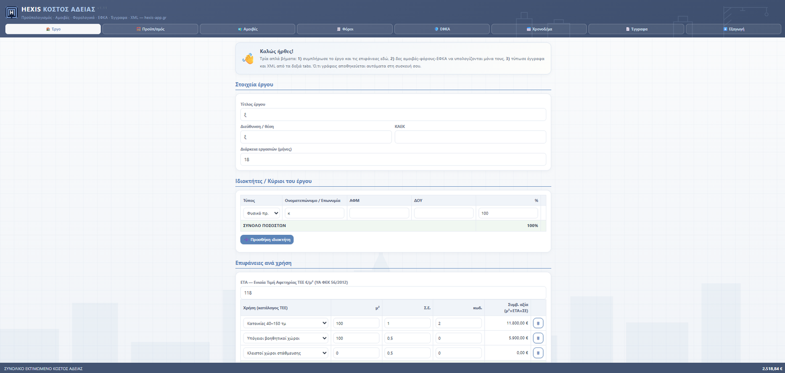
Το συνολικό εκτιμώμενο κόστος εμφανίζεται μόνιμα στο κάτω μέρος και ενημερώνεται με κάθε αλλαγή. Στο τέλος τυπώνεις έγγραφα (συμφωνητικά, ΣΑΥ/ΦΑΥ, ΥΔ) και εξάγεις XML για το e-Άδειες. Ό,τι γράφεις αποθηκεύεται αυτόματα στη συσκευή σου.
Νέο — Θέση έργου με ΚΑΕΚ & πολύγωνο οικοπέδου: στην αναζήτηση του χάρτη (καρτέλα Έργο) γράφεις είτε διεύθυνση είτε ΚΑΕΚ — με ΚΑΕΚ η πινέζα μπαίνει στο κεντροειδές και σχεδιάζεται το περίγραμμα του γεωτεμαχίου από την πανελλαδική βάση. Εναλλακτικά, με το ✏️ μολύβι πάνω στον χάρτη σχεδιάζεις εσύ το πολύγωνο του οικοπέδου (κάθε κλικ = κορυφή): με 3+ κορυφές ορίζεται αυτόματα η θέση του έργου και υπολογίζεται το εμβαδόν σε ΕΓΣΑ΄87. Διαθέσιμο και υπόβαθρο ορίων Κτηματολογίου (κουμπί επιπέδων ↗), ενώ η λίστα ΥΔΟΜ καλύπτει πλέον όλους τους δήμους της χώρας.
Νέο — Συμφωνηθείσες αμοιβές ανά μηχανικό: κάτω από τον πίνακα μελετών, στη λωρίδα 💶 Συμφωνηθείσα αμοιβή, ορίζεις το συνολικό συμφωνηθέν ποσό (ελεύθερα διαπραγματεύσιμο, ν.3919/2011) — και στην «Κατανομή αμοιβών ανά μηχανικό» γράφεις το ποσό που συμφωνεί ο καθένας χωριστά για μελέτες και επιβλέψεις. Τα δύο συγχρονίζονται αυτόματα (το άθροισμα των μηχανικών γίνεται η συνολική· αλλαγή της συνολικής ξαναμοιράζει αναλογικά), ενώ οι νόμιμες αμοιβές ΤΕΕ μένουν δίπλα ως μέτρο σύγκρισης και βάση του ΦΕΜ.
HEXIS Terrain
Από KML/KMZ (διαδρομές ή σημεία από Google Earth) σε τοπογραφικό υπόβαθρο ΕΓΣΑ΄87 (EPSG:2100): πύκνωση διαδρομής με βήμα της επιλογής σου, υψόμετρα από DEM (SRTM ~30 m) με δυνατότητα διόρθωσης Z, αυτόματο TIN και ισοϋψείς, και εξαγωγή έτοιμου DXF για το CAD σου.
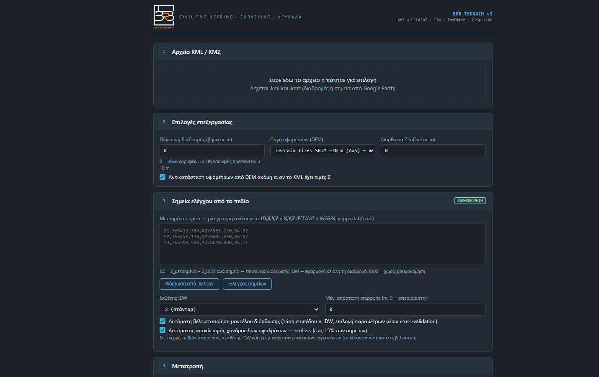
Το δυνατό του σημείο: η βαθμονόμηση με μετρημένα σημεία πεδίου. Επικολλάς σημεία ελέγχου (ID,X,Y,Z σε ΕΓΣΑ΄87 ή WGS84) και το εργαλείο υπολογίζει επιφάνεια διόρθωσης IDW, με αυτόματη βελτιστοποίηση μοντέλου (cross-validation) και αποκλεισμό χονδροειδών σφαλμάτων — ώστε το DEM να «κουμπώσει» στις δικές σου μετρήσεις.
Συχνές ερωτήσεις & Υποστήριξη
Δεν βλέπω τη νέα έκδοση
Κλείσε εντελώς την εφαρμογή (αφαίρεσέ την από τις πρόσφατες) και άνοιξέ την ξανά. Αν υπάρχει νεότερη έκδοση, εμφανίζεται banner «Διαθέσιμη νέα έκδοση» — πάτησε «Ενημέρωση τώρα». Η τρέχουσα έκδοση φαίνεται στο κάτω μέρος της αρχικής.
Ο συνεργάτης δεν βλέπει το έργο
Βεβαιώσου ότι έκανε εγγραφή με το ίδιο ακριβώς email που καταχώρησες στην Πρόσβαση — η βούλα δίπλα του πρέπει να είναι πράσινη.
Το βίντεο δεν ανεβαίνει
Μέγιστο 50MB — τράβα σε 1080p αντί για 4K, ή στείλε μικρότερο απόσπασμα.
Ξέχασα να τοποθετήσω πινέζα
Πάτησε ✏️ στην καταγραφή, επίλεξε κάτοψη, τοποθέτησε την πινέζα και αποθήκευσε.
Πώς διαγράφω έργο;
Μόνο από υπολογιστή (PC), με επιβεβαίωση πληκτρολόγησης του ονόματος — για να μη συμβεί ποτέ κατά λάθος από το κινητό στο εργοτάξιο. Και αν συμβεί, το Αντίγραφο ασφαλείας το επαναφέρει.
Δουλεύουν τα εργαλεία χωρίς internet;
Ναι — τα εργαλεία πεδίου λειτουργούν offline, εφόσον τα έχεις ανοίξει με σύνδεση τουλάχιστον μία φορά την τελευταία εβδομάδα.
Τι γίνεται όταν λήξει ένα add-on;
Το εργαλείο κλειδώνει και το ανανεώνεις με ένα πάτημα από τη σελίδα του. Τα δεδομένα σου δεν χάνονται ποτέ.
Επικοινωνία
BRB Development MON IKE · Τηλέφωνο: +30 693 322 6314 (κλήση, WhatsApp, Viber) · Email: brb.develop@gmail.com · Λευκάδα, Ελλάδα. Απαντάμε συνήθως εντός 24 ωρών.